第一章 起步
作者：Justin Hutchens
译者：飞龙
第一章介绍了设置和配置虚拟安全环境的基本知识，可用于本书中的大多数场景和练习。 本章中讨论的主题包括虚拟化软件的安装，虚拟环境中各种系统的安装以及练习中将使用的一些工具的配置。
1.1 使用 VMware Player（Windows）配置安全环境
通过在 Windows 工作站上安装VMware Player，你可以在具有相对较低可用资源的 Windows PC 上运行虚拟安全环境。 你可以免费获得 VMware Player，或者以低成本获得功能更为强大的 VMware Player Plus。
准备
为了在 Windows 工作站上安装 VMware Player，首先需要下载软件。 VMware Player 免费版本的下载，请访问https：// my.vmware.com/web/vmware/free。 在这个页面中，向下滚动到 VMware Player 链接，然后单击下载。 在下一页中，选择 Windows 32 或 64 位安装软件包，然后单击下载。 还有可用于 Linux 32 位和 64 位系统的安装包。
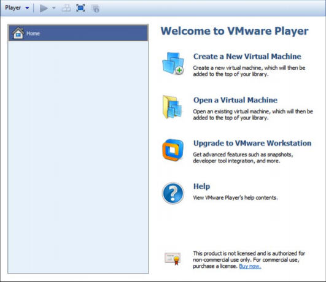
打开VMware Player后，可以选择创建新虚拟机来开始使用。 这会初始化一个非常易于使用的虚拟机安装向导：
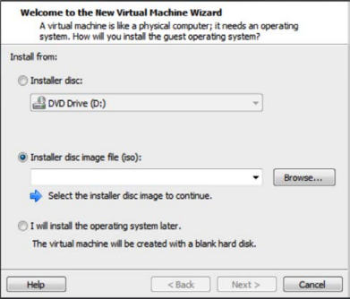
你需要在安装向导中执行的第一个任务是定义安装介质。 你可以选择直接从主机的光盘驱动器进行安装，也可以使用 ISO 映像文件。 本节中讨论的大多数安装都使用 ISO，并且每个秘籍中都会提到你可以获取它们的地方。 现在，我们假设我们浏览现有的ISO文件并点击Next，如下面的截图所示：
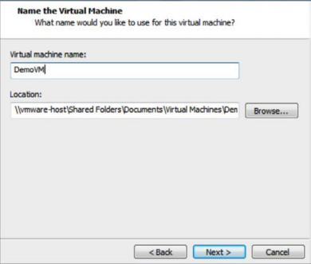
然后需要为虚拟机分配名称。 虚拟机名称只是一个任意值，用作标识，以便与库中的其他 VM 进行标识和区分。 由于安全环境通常分为多种不同的操作系统进行，因此将操作系统指定为虚拟机名称的一部分可能很有用。 以下屏幕截图显示Specify Disk Capacity窗口：
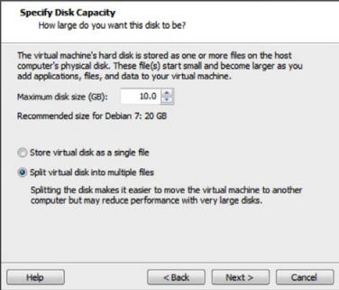
下一个屏幕请求安装的最大尺寸值。 虚拟机会按需使用硬盘驱动器空间，但不会超过此处指定的值。 此外，你还可以定义虚拟机是包含在单个文件中还是分布在多个文件中。 完成指定磁盘容量后，你将看到以下屏幕截图：
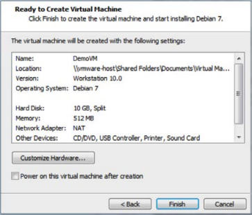
最后一步提供了配置的摘要。 你可以选择Finish按钮来完成虚拟机的创建，也可以选择Customize Hardware…按钮来操作更高级的配置。 看一看高级配置的以下屏幕截图：
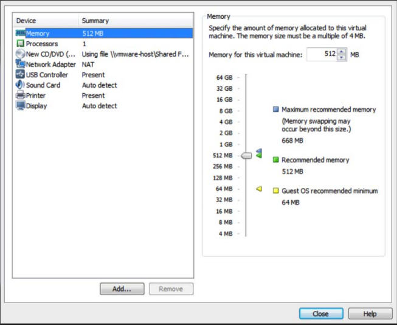
高级配置可以完全控制共享资源，虚拟硬件配置和网络。 大多数默认配置对于你的安全配置应该足够了，但如果需要在以后进行更改，则可以通过访问虚拟机设置来解决这些配置。 完成高级配置设置后，你将看到以下屏幕截图：
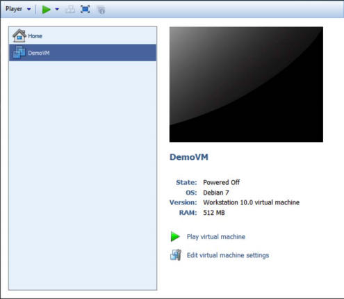
安装向导完成后，你应该会看到虚拟机库中列出了新的虚拟机。 它现在可以从这里通过按下播放按钮启动。 通过打开 VMware Player 的多个实例和每个实例中的唯一 VM，可以同时运行多个虚拟机。
工作原理
VMware 创建了一个虚拟化环境，可以共享来自单个主机系统的资源来创建整个网络环境。 虚拟化软件（如 VMware）使个人，独立研究者构建安全环境变得更加容易和便宜。
1.2 使用 VMware Player（Mac OS X）配置安全环境
你还可以通过在 Mac 上安装 VMware Fusion，在 Mac OS X 上运行虚拟安全环境。 VMware Fusion 需要一个必须购买的许可证，但它的价格非常合理。
准备
要在 Mac 上安装 VMware Player，您首先需要下载软件。 要下载免费试用版或购买软件，请访问以下URL：https：//www.vmware.com/products/ fusion /。
操作步骤
下载软件包后，你应该在默认下载目录中找到它。 运行.dmg安装文件，然后按照屏幕上的说明进行安装。 安装完成后，你可以从 Dock 或 Dock 中的 Applications 目录启动 VMware Fusion。 加载后，你将看到虚拟机库。 此库不包含任何虚拟机，但你在屏幕左侧创建它们时会填充它们。 以下屏幕截图显示了虚拟机库：
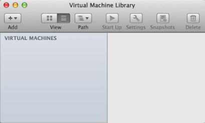
为了开始，请点击屏幕左上角的Add按钮，然后点击New。 这会启动虚拟机安装向导。 安装向导是一个非常简单的指导过程，用于设置虚拟机，如以下屏幕截图所示：
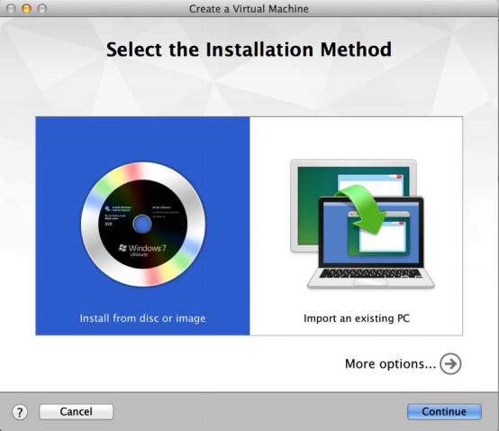
第一步请求你选择安装方法。 VMware Fusion 提供了从磁盘或映像（ISO 文件）安装的选项，也提供了多种技术将现有系统迁移到新虚拟机。 对于本节中讨论的所有虚拟机，你需要选择第一个选项。
选择第一个选项Install from disc or image值后，你会收到提示，选择要使用的安装光盘或映像。 如果没有自动填充，或者自动填充的选项不是你要安装的映像，请单击Use another disc or disc image按钮。 这应该会打开 Finder，它让你能够浏览到您要使用的镜像。 你可以获取特定系统映像文件的位置，将在本节后面的秘籍中讨论。 最后，我们被定向到Finish窗口：
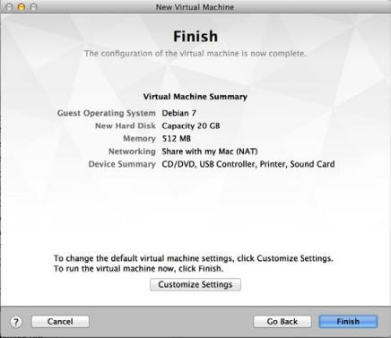
选择要使用的镜像文件后，单击Continue按钮，你会进入摘要屏幕。 这会向你提供所选配置的概述。 如果你希望更改这些设置，请单击Customize Settings按钮。 否则，单击Finish按钮创建虚拟机。 当你单击它时，你会被要求保存与虚拟机关联的文件。 用于保存它的名称是虚拟机的名称，并将显示在虚拟机库中，如以下屏幕截图所示：
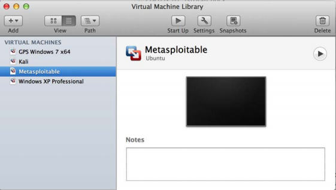
当你添加更多虚拟机时，你会看到它们包含在屏幕左侧的虚拟机库中。 通过选择任何特定的虚拟机，你可以通过单击顶部的Start Up按钮启动它。 此外，你可以使用Settings按钮修改配置，或使用Snapshots按钮在各种时间保存虚拟机。 你可以通过从库中独立启动每个虚拟机来同时运行多个虚拟机。
工作原理
通过在 Mac OS X 操作系统中使用 VMware Fusion，你可以创建虚拟化实验环境，以在 Apple 主机上创建整个网络环境。 虚拟化软件（如 VMware）使个人，独立研究者构建安全环境变得更加容易和便宜。
1.3 安装 Ubuntu Server
Ubuntu Server 是一个易于使用的 Linux 发行版，可用于托管网络服务和漏洞软件，以便在安全环境中进行测试。 如果你愿意，可以随意使用其他 Linux 发行版; 然而，Ubuntu 是初学者的良好选择，因为有大量的公开参考资料和资源。
准备
在 VMware 中安装 Ubuntu Server 之前，你需要下载磁盘镜像（ISO 文件）。 这个文件可以从 Ubuntu 的网站下载，网址如下：http://www.ubuntu.com/server。
操作步骤
在加载映像文件并从虚拟机启动后，你会看到默认的 Ubuntu 菜单，如下面的截图所示。 这包括多个安装和诊断选项。 可以使用键盘导航菜单。 对于标准安装，请确保选中Install Ubuntu Server选项，然后按Enter键。
安装过程开始时，系统将询问你一系列问题，来定义系统的配置。 前两个选项要求你指定您的语言和居住国。 回答这些问题后，你需要定义你的键盘布局配置，如以下屏幕截图所示：
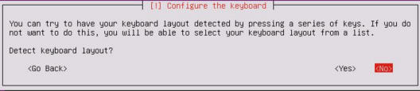
有多个选项可用于定义键盘布局。 一个选项是检测，其中系统会提示你按一系列键，这会让 Ubuntu 检测你正在使用的键盘布局。 你可以通过单击Yes使用键盘检测。 或者，你可以通过单击No手动选择键盘布局。此过程将根据你的国家/地区和语言，默认为你做出最可能的选择。 定义键盘布局后，系统会请求你输入系统的主机名。 如果你要将系统加入域，请确保主机名是唯一的。 接下来，系统会要求你输入新用户和用户名的全名。 与用户的全名不同，用户名应由单个小写字母字符串组成。 数字也可以包含在用户名中，但它们不能是第一个字符。 看看下面的截图：
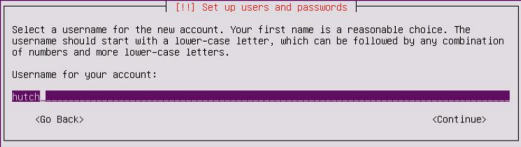
在你提供新帐户的用户名后，你会被要求提供密码。 确保你可以记住密码，因为你可能需要访问此系统来修改配置。 看看下面的截图：
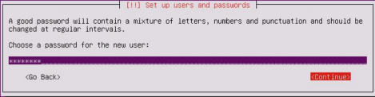
提供密码后，系统会要求你决定是否应加密每个用户的主目录。 虽然这提供了额外的安全层，但在实验环境中并不重要，因为系统不会持有任何真实的敏感数据。 接下来会要求你在系统上配置时钟，如以下屏幕截图所示：
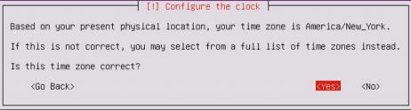
即使您的系统位于内部IP地址上，它也会尝试确定路由的公共IP地址，并使用此信息来猜测你的时区。 如果 Ubuntu 提供的猜测是正确的，选择Yes; 如果没有，请选择No来手动选择时区。 选择时区后，会要求你定义磁盘分区配置，如以下屏幕截图所示：
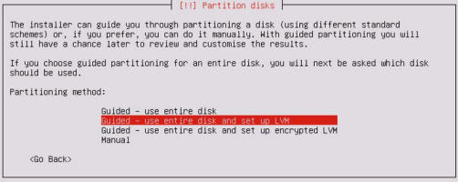
如果没有理由选择不同的项目，建议你保留默认。 你不需要在安全环境中执行任何手动分区操作，因为每个虚拟机通常都使用单个专用分区。 选择分区方法后，会要求你选择磁盘。 除非你已将其他磁盘添加到虚拟机，否则你只应在此处看到以下选项：
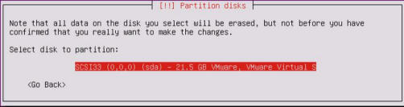
选择磁盘后，会要求你检查配置。 验证一切是否正确，然后确认安装。 在安装过程之前，会要求你配置HTTP代理。 出于本书的目的，不需要单独的代理，你可以将此字段留空。 最后，会询问你是否要在操作系统上安装任何软件，如以下屏幕截图所示：
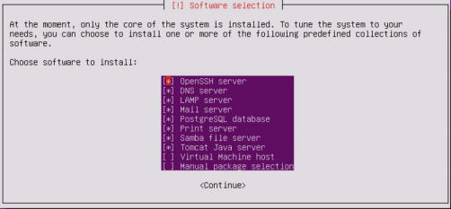
要选择任何给定的软件，请使用空格键。 为了增加攻击面，我已经选中了多个服务，仅排除了虚拟主机和额外的手动包选嫌。 一旦选择了所需的软件包，请按Enter键完成该过程。
工作原理
Ubuntu Server 没有 GUI，是特地的命令行驱动。 为了有效地使用它，建议你使用SSH。 为了配置和使用SSH，请参阅本节后面的“配置和使用SSH”秘籍。
1.4 安装 Metasploitable2
Metasploitable2 是一个故意存在漏洞的 Linux发行版，也是一个高效的安全培训工具。它充满了大量的漏洞网络服务，还包括几个漏洞 Web 应用程序。
准备
在你的虚拟安全实验室中安装 Metasploitable2 之前，你首先需要从Web下载它。有许多可用于此的镜像和 torrent。获取 Metasploitable 的一个相对简单的方法，是从 SourceForge 的 URL 下载它：http://sourceforge.net/projects/metasploitable/files/Metasploitable2/。
操作步骤
Metasploitable2 的安装可能是你在安全环境中执行的最简单的安装之一。这是因为当从 SourceForge 下载时，它已经准备好了 VMware 虚拟机。下载 ZIP 文件后，在 Windows 或 Mac OS X 中，你可以通过在 Explorer 或 Finder 中双击，分别轻松提取此文件的内容。看看下面的截图：
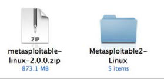
解压缩之后，ZIP 文件会返回一个目录，其中有五个附加文件。 这些文件中包括 VMware VMX 文件。 要在 VMware 中使用 Metasploitable，只需单击File下拉菜单，然后单击Open。 然后，浏览由ZIP提取过程创建的目录，并打开Metasploitable.vmx，如下面的屏幕截图所示：
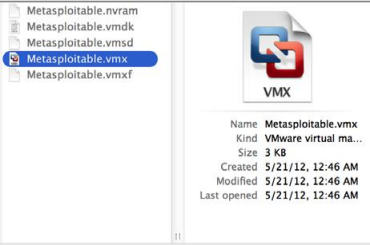
一旦打开了 VMX 文件，它应该包含在你的虚拟机库中。 从库中选择它并单击Run来启动VM，你可以看到以下界面：
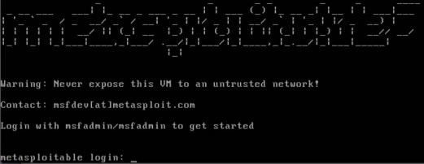
VM加载后，会显示启动屏幕并请求登录凭据。 默认登录凭证的用户名和密码是msfadmin。 此机器也可以通过SSH访问，在本节后面的“配置和使用SSH”中会涉及。
工作原理
Metasploitable 为安全测试教学的目的而建立。 这是一个非常有效的工具，但必须小心使用。 Metasploitable 系统不应该暴露于任何不可信的网络中。 不应该为其分配公共可访问的IP地址，并且不应使用端口转发来使服务可以通过网络地址转换（NAT）接口访问。
1.5 安装 Windows Server
在测试环境中安装 Windows 操作系统对于学习安全技能至关重要，因为它是生产系统中使用的最主要的操作系统环境。所提供的场景使用 Windows XP SP2（Service Pack 2）。由于 Windows XP 是较旧的操作系统，因此在测试环境中可以利用许多缺陷和漏洞。
准备
要完成本教程中讨论的任务和本书后面的一些练习，你需要获取 Windows 操作系统的副本。如果可能，应该使用 Windows XP SP2，因为它是在编写本书时使用的操作系统。选择此操作系统的原因之一是因为它不再受微软支持，并且可以相对容易地获取，以及成本很低甚至无成本。但是，由于不再支持，您需要从第三方供应商处购买或通过其他方式获取。这个产品的获得过程靠你来完成。
操作步骤
从 Windows XP 映像文件启动后，会加载一个蓝色菜单屏幕，它会问你一系列问题，来指导你完成安装过程。一开始，它会要求你定义操作系统将安装到的分区。除非你对虚拟机进行了自定义更改，否则你只能在此处看到一个选项。然后，你可以选择快速或全磁盘格式。任一选项都应可以满足虚拟机。一旦你回答了这些初步问题，你将收到有关操作系统配置的一系列问题。然后，你会被引导到以下屏幕：
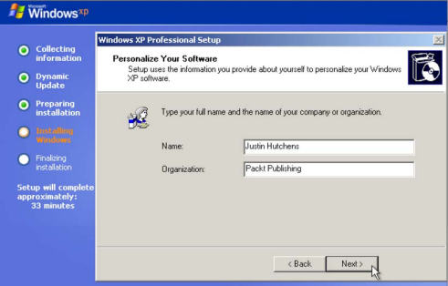
首先，你会被要求提供一个名称和组织。 该名称分配给已创建的初始帐户，但组织名称仅作为元数据而包含，对操作系统的性能没有影响。 接下来，会要求你提供计算机名称和管理员密码，如以下屏幕截图所示：
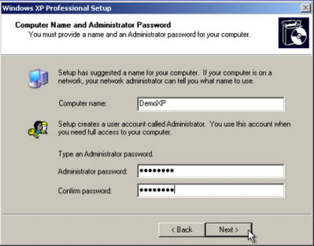
如果你要将系统添加到域中，建议你使用唯一的计算机名称。 管理员密码应该是你能够记住的密码，因为你需要登录到此系统以测试或更改配置。 然后将要求你设置日期，时间和时区。 这些可能会自动填充，但确保它们是正确的，因为错误配置日期和时间可能会影响系统性能。 看看下面的截图：
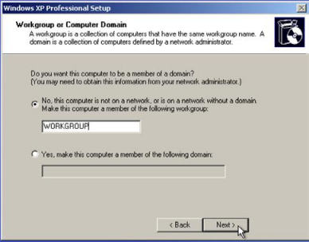
配置时间和日期后，系统会要求你将系统分配到工作组或域。 本书中讨论的大多数练习可以使用任一配置执行。 但是，有一些远程 SMB 审计任务，需要将系统加入域，这会在后面讨论。 以下屏幕截图显示Help Protect your PC窗口：
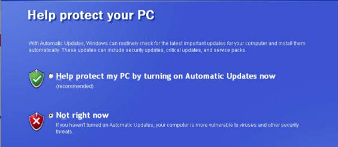
安装过程完成后，系统将提示你使用自动更新保护您的电脑。 默认选择是启用自动更新。 但是，由于我们希望增加我们可用的测试机会，我们将选择Not right now选项。
工作原理
Windows XP SP2 对任何初学者的安全环境，都是一个很好的补充。 由于它是一个较旧的操作系统，它提供了大量的可用于测试和利用的漏洞。 但是，随着渗透测试领域的技术水平的提高，开始通过引入更新和更安全的操作系统（如Windows 7）来进一步提高你的技能是非常重要的。
1.6 增加 Windows 的攻击面
为了进一步提高Windows操作系统上可用的攻击面，添加易受攻击的软件以及启用或禁用某些集成组件很重要。
准备
在修改Windows中的配置来增加攻击面之前，你需要在其中一个虚拟机上安装操作系统。 如果尚未执行此操作，请参阅本章中的“安装Windows Server”秘籍。
操作步骤
启用远程服务，特别是未打补丁的远程服务，通常是将一些漏洞引入系统的有效方法。 首先，你需要在Windows系统上启用简单网络管理协议（SNMP）。 为此，请打开左下角的开始菜单，然后单击Control Panel（控制面板）。 双击Add or Remove Programs（添加或删除程序）图标，然后单击屏幕左侧的Add/Remove Windows Components（添加/删除Windows组件）链接，你会看到以下界面：
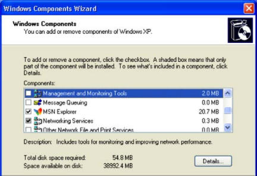
从这里，你可以看到可以在操作系统上启用或禁用的组件列表。 向下滚动到Management and Monitoring Tools（管理和监控工具），并双击它来打开其中包含的选项，如以下屏幕截图所示：
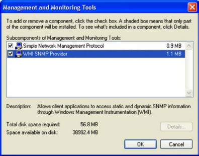
打开后，请确保选中 SNMP 和 WMI SNMP Provider 的复选框。 这将允许在系统上执行远程SNMP查询。 单击确定后，会开始安装这些服务。 这些服务的安装需要 Windows XP 映像光盘，VMware 可能在虚拟机映像后删除。 如果是这种情况，你会收到一个弹出请求让你插入光盘，如以下屏幕截图所示：
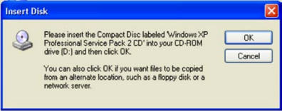
为此，请访问虚拟机设置。 确保已启用虚拟光驱，然后浏览主机文件系统中的ISO文件来添加光盘：
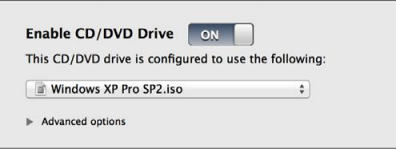
一旦检测到光盘，SNMP服务的安装会自动完成。 Windows Components Wizard（Windows组件向导）应在安装完成时通知你。 除了添加服务之外，还应删除操作系统中包含的一些默认服务。 为此，请再次打开Control Panel（控制面板），然后双击Security Center（安全中心）图标。 滚动到页面底部，单击Windows Firewall（Windows防火墙）的链接，并确保此功能已关闭，如以下屏幕截图所示：
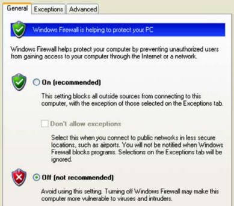
关闭Windows防火墙功能后，单击OK返回上一级菜单。 再次滚动到底部，然后单击Automatic Updates（自动更新）链接，并确保它也关闭。
工作原理
在操作系统上启用功能服务和禁用安全服务大大增加了泄密的风险。 通过增加操作系统上存在的漏洞数量，我们还增加了可用于学习攻击模式和利用的机会的数量。 这个特定的秘籍只注重 Windows 中集成组件的操作，来增加攻击面。 但是，安装各种具有已知漏洞的第三方软件包也很有用。 可以在以下 URL 中找到易受攻击的软件包：
1.7 安装 Kali Linux
Kali Linux 是一个完整的渗透测试工具库，也可用作许多扫描脚本的开发环境，这将在本书中讨论。
准备
在你的虚拟安全测试环境中安装 Kali Linux 之前，你需要从受信任的来源获取 ISO 文件（映像文件）。 Kali Linux ISO 可以从http://www.kali.org/downloads/下载。
操作步骤
从 Kali Linux 映像文件启动后，你会看到初始启动菜单。 在这里，向下滚动到第四个选项，Install，然后按Enter键开始安装过程：
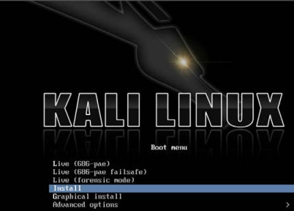
一旦开始，系统会引导你通过一系列问题完成安装过程。 最初，系统会要求你提供你的位置（国家）和语言。 然后，你会获得一个选项，可以手动选择键盘配置或使用指导检测过程。 下一步回请求你为系统提供主机名。 如果系统需要加入域，请确保主机名是唯一的，如以下屏幕截图所示：
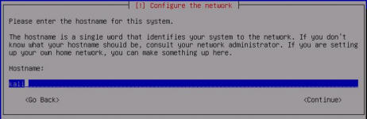
接下来，你需要设置 root 帐户的密码。 建议设置一个相当复杂的密码，不会轻易攻破。 看看下面的截图：
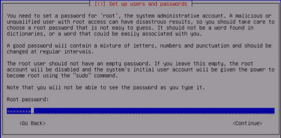
接下来，系统会要求你提供所在时区。系统将使用IP地理位置作为你的位置的最佳猜测。 如果这不正确，请手动选择正确的时区：
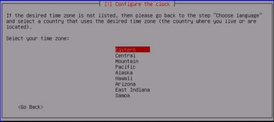
为了设置磁盘分区，使用默认方法和分区方案应足以用于实验目的：
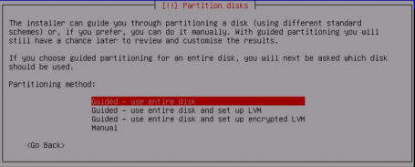
建议你使用镜像来确保 Kali Linux 中的软件保持最新：
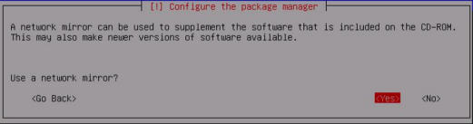
接下来，系统会要求你提供 HTTP 代理地址。 本书中所述的任何练习都不需要外部 HTTP 代理，因此可以将其留空：
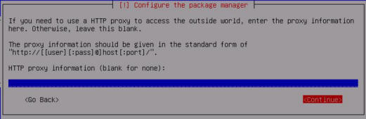
最后，选择Yes来安装 GRUB 引导加载程序，然后按Enter键完成安装过程。 当系统加载时，你可以使用安装期间提供的 root 帐户和密码登录：
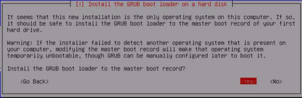
工作原理
Kali Linux 是一个 Debian Linux 发行版，其中包含大量预安装的第三方渗透工具。 虽然所有这些工具都可以独立获取和安装，Kali Linux 提供的组织和实现使其成为任何渗透测试者的有力工具。
1.8 配置和使用 SSH
同时处理多个虚拟机可能会变得乏味，耗时和令人沮丧。 为了减少从一个 VMware 屏幕跳到另一个 VMware 屏幕的需要，并增加虚拟系统之间的通信便利性，在每个虚拟系统上配置和启用SSH非常有帮助。 这个秘籍讨论了如何在每个 Linux 虚拟机上使用 SSH。
准备
为了在虚拟机上使用 SSH，必须先在主机系统上安装 SSH 客户端。 SSH 客户端集成到大多数 Linux 和 OS X 系统中，并且可以从终端接口访问。 如果你使用 Windows主机，则需要下载并安装 Windows 终端服务客户端。 一个免费和容易使用的是PuTTY。 PuTTY可以从http://www.putty.org/下载。
操作步骤
你首先需要在图形界面中直接从终端启用 SSH。 此命令需要在虚拟机客户端中直接运行。 除了 Windows XP 虚拟机，环境中的所有其他虚拟机都是 Linux 发行版，并且应该原生支持 SSH。 启用此功能的步骤在几乎所有 Linux 发行版中都是相同的，如下所示：
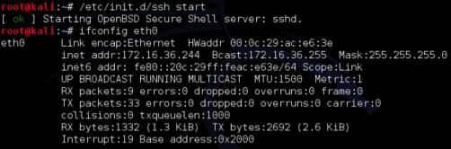
/etc/init.d/ssh start命令可用于启动服务。 如果你没有使用root登录，则需要将sudo预置到此命令。 如果接收到错误，则可能是设备上未安装 SSH 守护程序。 如果是这种情况，执行apt-get install ssh命令可用于安装 SSH 守护程序。 然后，ifconfig可用于获取系统的IP地址，这将用于建立SSH连接。 激活后，现在可以使用 SSH 从主机系统访问 VMware 客户系统。 为此，请最小化虚拟机并打开主机的 SSH 客户端。
如果你使用 Mac OSX 或 Linux 作为主机系统，则可以直接从终端调用客户端。 或者，如果你在 Windows 主机上运行虚拟机，则需要使用终端模拟器，如PuTTY。 在以下示例中，我们通过提供 Kali 虚拟机的 IP 地址建立 SSH 会话：
DEMOSYS:~ jhutchens$ ssh root@172.16.36.244
The authenticity of host '172.16.36.244 (172.16.36.244)' can't be established.
RSA key fingerprint is c7:13:ed:c4:71:4f:89:53:5b:ee:cf:1f:40:06:d9:11.
Are you sure you want to continue connecting (yes/no)? yes
Warning: Permanently added '172.16.36.244' (RSA) to the list of known hosts.
root@172.16.36.244's password:
Linux kali 3.7-trunk-686-pae #1 SMP Debian 3.7.2-0+kali5 i686
The programs included with the Kali GNU/Linux system are free software; the exact distribution terms for each program are described in the individual files in /usr/share/doc/*/copyright.
Kali GNU/Linux comes with ABSOLUTELY NO WARRANTY, to the extent permitted by applicable law. root@kali:~#
下载示例代码
你可以从
http://www.packtpub.com下载你从帐户中购买的所有Packt图书的示例代码文件。 如果你在其他地方购买此书，可以访问http：//www.packtpub。 com / support并注册，以使文件能够直接发送给你。
SSH客户端的适当用法是ssh [user] @ [IP address]。 在提供的示例中，SSH 将使用root帐户访问 Kali 系统（由提供的 IP 地址标识）。 由于主机未包含在已知主机列表中，因此将首次提示你确认连接。 为此，请输入yes。 然后会提示你输入root帐户的密码。 输入后，你应该可以通过远程shell访问系统。 相同的过程可以在Windows中使用PuTTY完成。 它可以通过本秘籍的准备就绪部分提供的链接下载。 下载后，打开PuTTY并在“主机名”字段中输入虚拟机的IP地址，并确保 SSH 单选按钮选中，如以下屏幕截图所示：
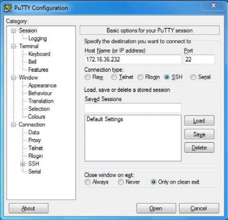
一旦设置了连接配置，单击Open按钮启动会话。 系统会提示我们输入用户名和密码。 我们应该输入我们连接的系统的凭据。 一旦认证过程完成，我们会被远程终端授予系统的访问权限，如以下屏幕截图所示：
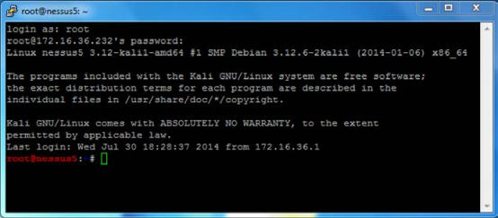
通过将公钥提供给远程主机上的authorized_keys文件，可以避免每次都进行身份验证。 执行此操作的过程如下：
root@kali:~# ls .ssh
ls: cannot access .ssh: No such file or directory
root@kali:~# mkdir .ssh
root@kali:~# cd .ssh/ r
oot@kali:~/.ssh# nano authorized_keys
首先，确保.ssh隐藏目录已存在于根目录中。 为此，请以目录名称使用ls。 如果它不存在，请使用mkdir创建目录。 然后，使用cd命令将当前位置更改为该目录。 然后，使用Nano或VIM创建名为authorized_keys的文件。 如果你不熟悉如何使用这些文本编辑器，请参阅本章中的“使用文本编辑器（VIM和Nano）”秘籍。 在此文件中，你应该粘贴SSH客户端使用的公钥，如下所示：
DEMOSYS:~ jhutchens$ ssh root@172.16.36.244
Linux kali 3.7-trunk-686-pae #1 SMP Debian 3.7.2-0+kali5 i686
The programs included with the Kali GNU/Linux system are free software; the exact distribution terms for each program are described in the individual files in /usr/share/doc/*/copyright.
Kali GNU/Linux comes with ABSOLUTELY NO WARRANTY, to the extent permitted by applicable law.
Last login: Sat May 10 22:38:31 2014 from 172.16.36.1
root@kali:~#
一旦操作完毕，你应该能够连接到SSH，而不必提供验证的密码。
工作原理
SSH在客户端和服务器之间建立加密的通信通道。 此通道可用于提供远程管理服务，并使用安全复制（SCP）安全地传输文件。
1.9 在 Kali 上安装 Nessus
Nessus是一个功能强大的漏洞扫描器，可以安装在Kali Linux平台上。该秘籍讨论了安装，启动和激活Nessus服务的过程。
准备
在尝试在 Kali Linux 中安装Nessus漏洞扫描程序之前，你需要获取一个激活代码。此激活代码是获取审计插件所必需的，Nessus用它来评估联网系统。如果你打算在家里或者在你的实验室中使用Nessus，你可以免费获得家庭版密钥。或者，如果你要使用Nessus审计生产系统，则需要获取专业版密钥。在任一情况下，你都可以在http：// www. tenable.com/products/nessus/nessus-plugins/obtain-an-activation-code获取此激活码。
操作步骤
一旦你获得了你的激活代码，你将需要在http://www.tenable.com/products/nessus/ select-your-operating-system下载Nessus安装包。以下屏幕截图显示了Nessus可以运行的各种平台及其相应的安装包的列表：
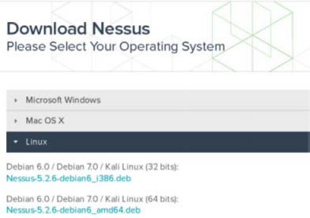
为已安装的操作系统的体系结构选择适当的安装包。 一旦你选择它，阅读并同意Tenable提供的订阅协议。 然后你的系统将下载安装包。 单击保存文件，然后浏览要保存到的位置：
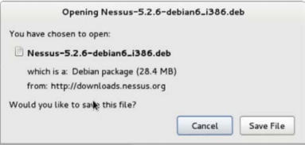
在提供的示例中，我已将安装程序包保存到根目录。 下载后，你可以从命令行完成安装。 这可以通过 SSH 或通过图形桌面上的终端以下列方式完成：
root@kali:~# ls
Desktop Nessus-5.2.6-debian6_i386.deb
root@kali:~# dpkg -i Nessus-5.2.6-debian6_i386.deb
Selecting previously unselected package nessus.
(Reading database ... 231224 files and directories currently installed.)
Unpacking nessus
(from Nessus-5.2.6-debian6_i386.deb) ...
Setting up nessus (5.2.6) ...
nessusd (Nessus) 5.2.6 [build N25116] for Linux
Copyright (C) 1998 - 2014 Tenable Network Security, Inc
Processing the Nessus plugins... [##################################################]
All plugins loaded
- You can start nessusd by typing /etc/init.d/nessusd start
- Then go to https://kali:8834/ to configure your scanner
root@kali:~# /etc/init.d/nessusd start
$Starting Nessus : .
使用ls命令验证安装包是否在当前目录中。 你应该会在响应中看到它。 然后可以使用Debian软件包管理器（dpkg）工具安装服务。 -i参数告诉软件包管理器安装指定的软件包。 安装完成后，可以使用命令/etc/init.d/nessusd start启动服务。 Nessus完全从Web界面运行，可以从其他机器轻松访问。 如果你想从Kali系统管理Nessus，你可以通过网络浏览器访问它：https：//127.0.0.1:8834/。 或者，你可以通过Web浏览器使用Kali Linux虚拟机的IP地址从远程系统（如主机操作系统）访问它。 在提供的示例中，从主机操作系统访问Nessus服务的响应URL是https://172.16.36.244:8834：
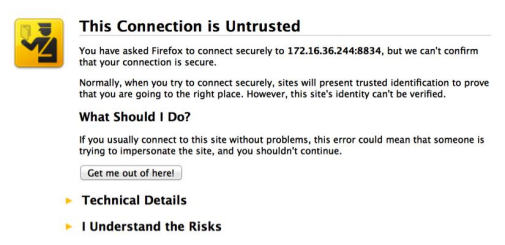
默认情况下，Nessus服务使用自签名SSL证书，因此你将收到不受信任的连接警告。 对于安全实验室使用目的，你可以忽略此警告并继续。 这可以通过展开I Understand the Risks选项来完成，如以下屏幕截图所示：
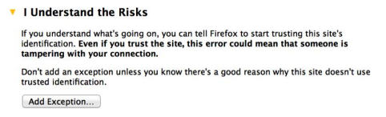
当你展开了此选项时，你可以单击Add Exception按钮。 这会防止每次尝试访问服务时都必须处理此警告。 将服务作为例外添加后，你将看到欢迎屏幕。 从这里，点击Get Started按钮。 这会将你带到以下屏幕：
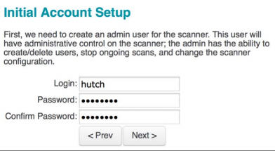
必须设置的第一个配置是管理员的用户帐户和关联的密码。 这些凭据会用于登录和使用Nessus服务。 输入新的用户名和密码后，单击Next继续; 您会看到以下屏幕：
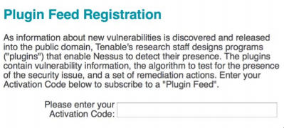
然后，你需要输入激活代码。 如果你没有激活码，请参阅本秘籍的准备就绪部分。 最后，输入激活码后，你会返回到登录页面，并要求输入你的用户名和密码。 在此处，你需要输入在安装过程中创建的相同凭据。 以下是之后每次访问URL时，Nessus 会加载的默认屏幕：
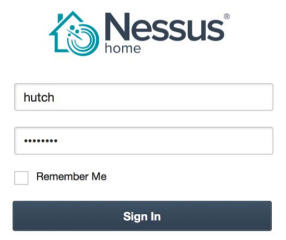
工作原理
正确安装后，可以从主机系统和安装了图形Web浏览器的所有虚拟机访问Nessus漏洞扫描程序。 这是因为Nessus服务托管在TCP端口8834上，并且主机和所有其他虚拟系统拥有位于相同私有IP空间中的网络接口。
1.10 在 Kali 上配置 Burp Suite
Burp Suite Proxy是实用而强大的 Web 应用程序审计工具之一。 但是，它不是一个可以轻松地单击来启动的工具。 我们必须修改Burp Suite 应用程序和相关 Web 浏览器中的配置，以确保每个配置与其他设备正确通信。
准备
在 Kali Linux 中首次启动 Burp Suite 不需要做任何事情。 免费版是一个集成工具，它已经安装了。 或者，如果你选择使用专业版本，可以在https://pro.portswigger.net/buy/购买许可证。 许可证相对便宜，对于额外的功能非常值得。 然而，免费版仍然非常有用，并且为用户免费提供大多数核心功能。
操作步骤
Burp Suite 是一个 GUI 工具，需要访问图形桌面才能运行。 因此，Burp Suite 不能通过 SSH 使用。 在 Kali Linux 中有两种方法启动 Burp Suite。 你可以在Applications菜单中浏览Applications | Kali Linux | Top 10 Security Tools | burpsuite。 或者，你可以通过将其传给 bash 终端中的 Java 解释器来执行它，如下所示：
root@kali:~# java -jar /usr/bin/burpsuite.jar
加载 Burp Suite 后，请确保代理监听器处于活动状态，并在所需的端口上运行。 提供的示例使用 TCP 端口 8080。 我们可以通过选择Proxy选项卡，然后选择下面的Options选项卡来验证这些配置，如以下屏幕截图所示：
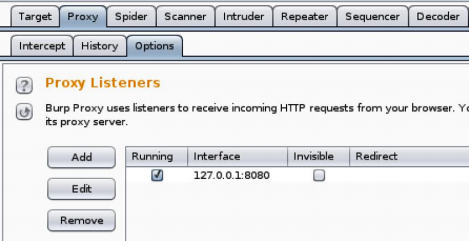
在这里，你会看到所有代理监听器的列表。 如果没有，请添加一个。 要与 Kali Linux 中的 IceWeasel Web 浏览器一起使用，请将监听器配置为侦听127.0.0.1地址上的特定端口。 此外，请确保激活Running复选框。 在Burp Suite 中配置监听器之后，还需要修改 IceWeasel 浏览器配置来通过代理转发流量。 为此，请通过单击屏幕顶部的weasel globe图标打开 IceWeasel。 打开后，展开Edit下拉菜单，然后单击Preferences以获取以下屏幕截图：
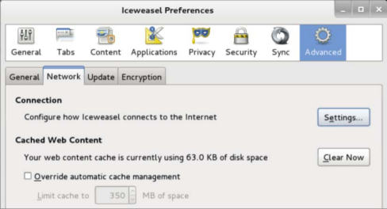
在 IceWeasel 首选项菜单中，单击顶部的高级Advanced选项按钮，然后选择Network选项卡。 然后，单击Connection标题下的Settings按钮。 这将打开Connection Settings配置菜单，如以下屏幕截图所示：
默认情况下，代理单选按钮设置为Use system proxy settings（使用系统代理设置）。 这需要更改为Manual proxy configuration（手动代理配置）。 手动代理配置应与 Burp Suite 代理监听器配置相同。 在所提供的示例中，HTTP 代理地址设置为127.0.0.1，端口值设置为 TCP 8080.要捕获其他流量（如 HTTPS），请单击Use this proxy server for all protocols（为所有协议使用此代理服务器）复选框。 要验证一切是否正常工作，请尝试使用 IceWeasel 浏览器浏览网站，如以下屏幕截图所示：
如果你的配置正确，您应该看到浏览器尝试连接，但没有任何内容将在浏览器中呈现。 这是因为从浏览器发送的请求被代理拦截。 代理拦截是 Burp Suite 中使用的默认配置。 要确认请求已成功捕获，请返回 Burp Suite 代理接口，如图所示：
在这里，你应该看到捕获的请求。 要继续将浏览器用于其他用途，你可以将代理配置更改为被动监听，只需点击Intercept is on（拦截开启）按钮就可以将其禁用，或者你可以将浏览器中的代理设置更改回Use system proxy settings（使用系统代理设置选项），使用 Burp 时使用手动代理设置。
工作原理
在 Burp Suite 中使用的初始配置在 TCP 8080 上创建了一个监听端口。该端口由 Burp Suite 用于拦截所有 Web 流量，并接收由响应返回的入站流量。 通过将 IceWeasel Web 浏览器的代理配置指向此端口，我们让浏览器中生成的所有流量都通过 Burp Suite 代理进行路由。 由于 Burp 提供的功能，我们现在可以随意修改途中的流量。
1.11 使用文本编辑器（VIM 和 Nano）
文本编辑器会经常用于创建或修改文件系统中的现有文件。 你应该在任何时候使用文本编辑器在 Kali 中创建自定义脚本。 你还应在任何时候使用文本编辑器修改配置文件或现有渗透测试工具。
准备
在 Kali Linux 中使用文本编辑器工具之前，不需要执行其他步骤。 VIM和Nano都是集成工具，已经安装在操作系统中。
操作步骤
为了使用 Kali 中的 VIM 文本编辑器创建文件，请使用vim命令，并带有要创建或修改的文件名称：
root@kali:~# vim vim_demo.txt
在提供的示例中，VIM 用于创建名为vim_demo.txt的文件。 由于当前没有文件以该名称存在于活动目录中，VIM 自动创建一个新文件并打开一个空文本编辑器。 为了开始在编辑器中输入文本，请按I或Insert按钮。 然后，开始输入所需的文本，如下所示：
Write to file demonstration with VIM
~
~
~
~
在提供的示例中，只有一行添加到文本文件。 但是，在大多数情况下，在创建新文件时，很可能使用多行。 完成后，按Esc键退出插入模式并在 VIM 中进入命令模式。 然后，键入:wq并按Enter键保存。 然后，你可以使用以下 bash 命令验证文件是否存在并验证文件的内容：
root@kali:~# ls
Desktop vim_demo.txt
root@kali:~# cat vim_demo.txt
Write to file demonstration with VIM
ls命令可以用来查看当前目录的内容。 在这里，你可以看到vim_demo.txt文件已创建。 cat命令可用于读取和显示文件的内容。 也可以使用的替代文本编辑器是 Nano。 Nano 的基本用法与 VIM 非常相似。 为了开始，请使用nano命令，后面带有要创建或修改的文件名称：
root@kali:~# nano nano_demo.txt
在提供的示例中，nano用于打开名为nano_demo.txt的文件。 由于当前不存在具有该名称的文件，因此将创建一个新文件。 与 VIM 不同，没有单独的命令和写入模式。 相反，写入文件可以自动完成，并且通过按Ctrl键和特定的字母键来执行命令。 这些命令的列表可以始终在文本编辑器界面的底部看到：
GNU nano 2.2.6 File: nano_demo.txt
Write to file demonstration with Nano
提供的示例向nano_demo.txt文件写入了一行。 要关闭编辑器，可以使用Ctrl + X，然后会提示您使用y保存文件或使用n不保存文件。 系统会要求你确认要写入的文件名。 默认情况下，会使用 Nano 执行时提供的名称填充。 但是，可以更改此值，并将文件的内容另存为不同的文件名，如下所示：
root@kali:~# ls
Desktop nano_demo.txt vim_demo.txt
root@kali:~# cat nano_demo.txt
Write to file demonstration with Nano
一旦完成，可以再次使用ls和cat命令来验证文件是否写入目录，并分别验证文件的内容。 这个秘籍的目的是讨论每个这些编辑器的基本使用来编写和操纵文件。 然而要注意，这些都是非常强大的文本编辑器，有大量其他用于文件编辑的功能。 有关其用法的更多信息，请使用man命令访问手册页，后面带有特定文本编辑器的名称。
工作原理
文本编辑器只不过是命令行驱动的字符处理工具。 这些工具中的每个及其所有相关功能可以在不使用任何图形界面而执行。 由于没有任何图形组件，这些工具需要非常少的开销，并且极快。 因此，他们能够非常有效并快速修改文件，或通过远程终端接口（如 SSH 或 Telnet）处理文件。